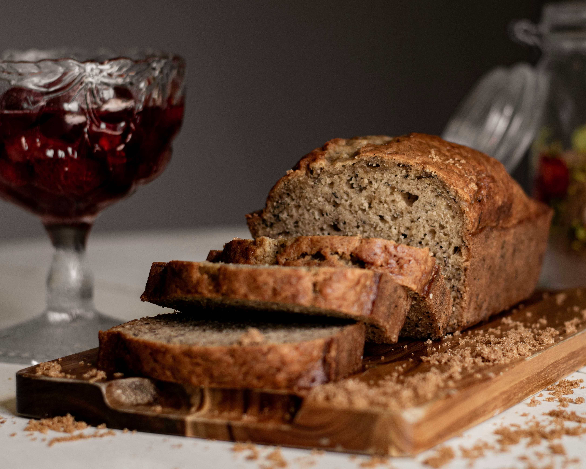

Banana Bread

Description
This banana bread recipe will knock your socks off!
You'll devour it before it has time to fully cool.
Spreading a little butter or honey would go perfectly with this timeless recipe.
Ingredients
- 2 cups flour
- 1 teaspoon baking soda
- 1/4 teaspoon salt
- 1/2 teaspoon cinnamon
- 1/2 teaspoon allspice
- 8 tablespoons unsalted butter
- 3/4 cup brown sugar
- 2 eggs
- 1/3 cup sour cream
- 2 cups ripe mashed bananas (roughly 4 bananas)
- 1 teaspoon vanilla
Steps
- Preheat oven to 350°F
- Grease 9x5 bread pan
- Using mixer, beat softened butter, brown sugar, eggs, yogurt, bananas, and vanilla,
adding 1 ingredient at a time until combined
- Slowly beat in all dry ingredients, do not over mix
- Pour mix into pan
- Bake for 1 hour